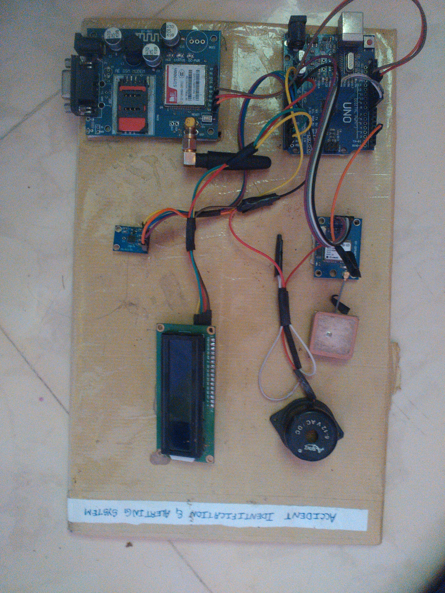
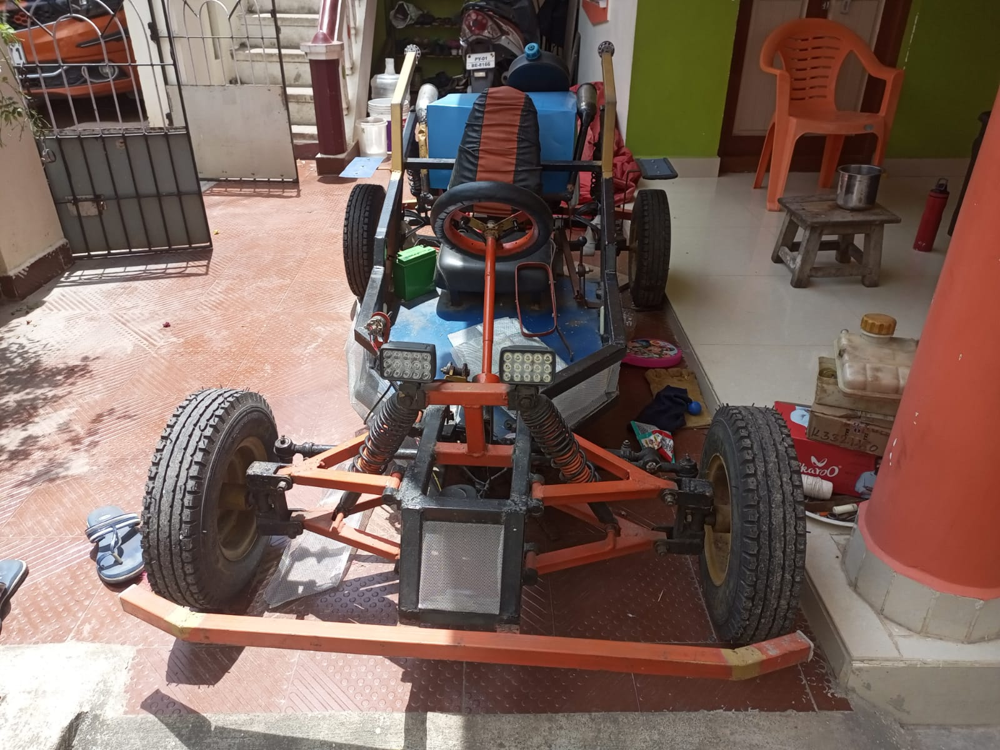

Full Project Archive.
A complete list of my technical projects, experiments, and builds across hardware, AI, and software.
 🏆 1st Prize
🏆 1st Prize
Electric Four-Wheeler '25
Semi-autonomous EV powertrain with mobile-based control and custom differential logic.

AI Emergency Dispatcher
NIT Trichy Intern Project. NLP system to classify calls and automate dispatch via GeoJSON.

Automated Pothole Mapping
Real-time road hazard detection system using Computer Vision.
 🥉 3rd Place
🥉 3rd Place
Electric Four-Wheeler '24
Designed the complete electrical system and wiring harness, alongside mechanical fabrication. Inspired by the Jeep Willys.

Real-Time Emotion Detection
Custom YOLOv8 model trained on 6.6k images for instant emotion recognition.

🏆 1st Prize (School Expo)Accident Alert System
IoT device that detects vehicle collisions using accelerometers and instantly SMSs precise GPS coordinates to emergency contacts.

Off-Road Go-Kart
Hand-built chassis featuring a TVS Jive 110cc engine swap, independent front suspension, and disc brakes, delivering rugged all-terrain performance and durability.